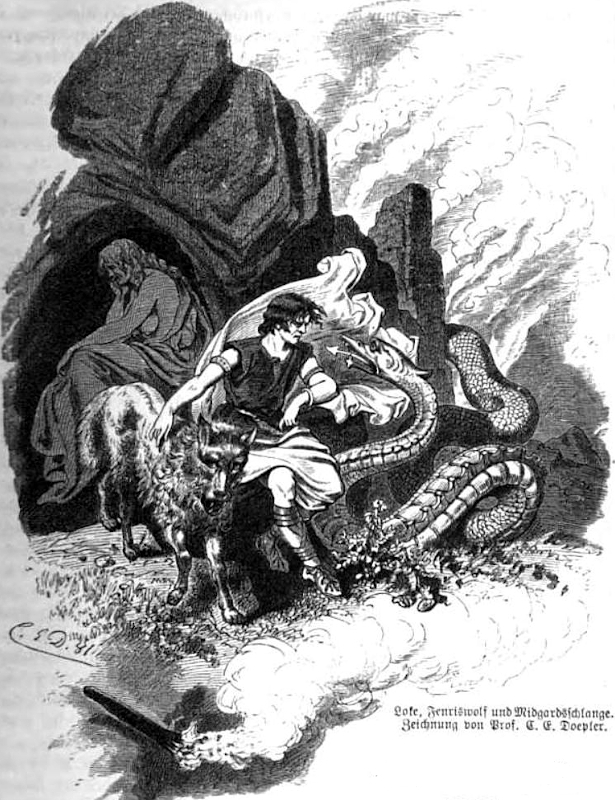

| Loki | |
|---|---|
|
 |
|
| Pronunciation | |
| Old Norse: |
Loki |
| Modern English: |
Loki |
| Relations | |
| Father | Farbauti |
| Mother | Laufey |
| Wife | Sigyn |
| Children |
Hel Fenrir Jormungandr Narfi Nari Slepnir |
Loki, Half-Jötunn Trickster
Loki is one of the most complex gods in Norse mythology. He is seen varying between helping the gods and antagonizing them on multiple occasions. He has the ability to shapeshift, and even shapeshifted into a horse on one occasion and gave birth to Odin's eight-legged horse, Slepnir. He is also father to three of the most monstrous beings in norse mythology, Hel, Fenrir, and Jormungandr.